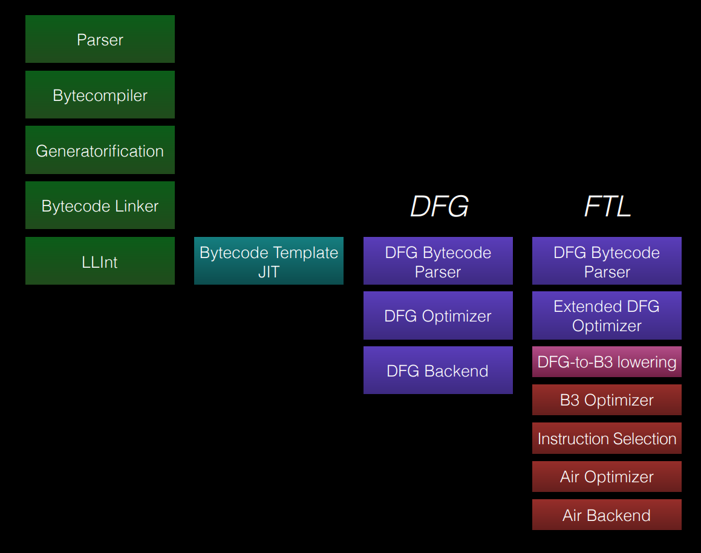
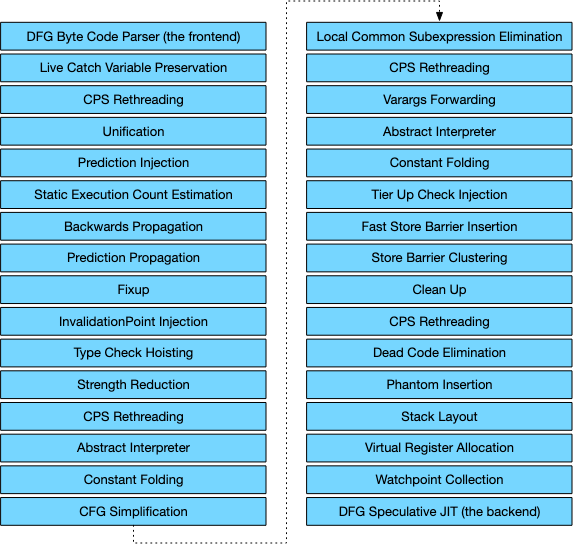
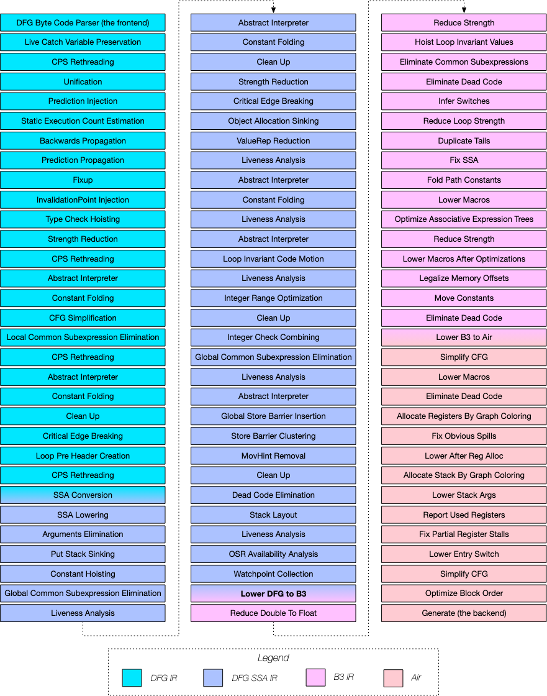
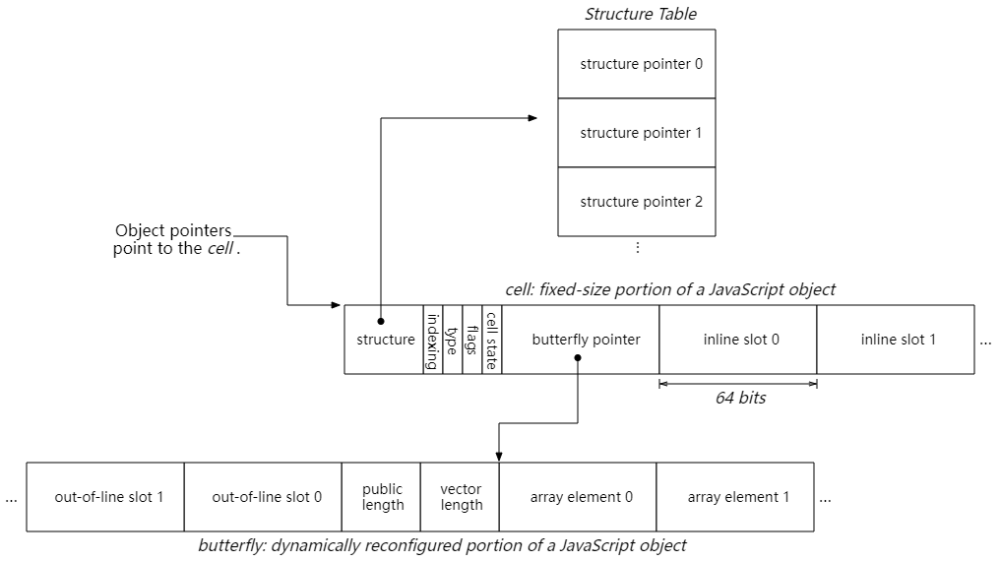

JavaScriptCore Root Cause 分析要点¶
这篇笔记主要整理 JavaScriptCore 做 Root Cause 时常用的几个观察面：引擎整体分层、JIT 优化链路，以及对象模型。后面看具体漏洞时，通常也是先把这三块对齐，再往下看字节码、图和机器码。
引擎架构¶

这张图先给出一个总的阅读顺序。平时说 JSC，真正排查问题时通常不会只停在 jsc 这个可执行文件本身，而是会顺着 Parser、Bytecode、LLInt、Baseline、DFG、FTL 这一条执行链往下看。Root Cause 时最先要确认的一件事，就是问题出现在哪一层。
如果问题在 LLInt 或 Baseline，通常先看字节码语义、inline cache、对象布局和 runtime helper。如果问题出现在 DFG 或 FTL，重点会转到推测、图变换、lowering、clobber 信息以及 OSR 入口/出口的状态同步。先把层次确定下来，后面的断点、dump 参数和 patch 阅读范围就会收得比较快。
DFG 与 FTL 优化 Pipeline¶


JSC 的执行层可以先按冷代码到热代码的方向去理解。冷代码先经过 LLInt 和 Baseline，执行过程中不断收集 profile；代码热起来之后，DFG 会基于这些 profile 做更激进的推测；再往后如果继续升温，就有机会进入 FTL。FTL 不是简单“再做一层优化”，而是把 DFG 图继续往 B3 / Air 这条后端链路下放，最后生成更重的机器码。
Root Cause 时，先看清楚 bug 发生在什么阶段很重要。若问题只出现在 DFG 图里，重点通常是某个 phase 把语义推断得过于乐观了；若 DFG 正常、FTL 才出问题，重点就会偏向 lowering、后端重写或者 Air/B3 层的约束丢失。很多 JIT 类型漏洞，本质上都是“上层建立的前提，在下层没有被继续维护”。
对象模型¶

对象模型是另一条必须同时看的主线。JSC 里真正的对象访问，通常离不开 JSCell、Structure 和 Butterfly 这几个核心部件。JSCell 头里先放对象的基本元信息，Structure 描述对象当前的形状、类型和属性布局，Butterfly 则承载 indexed storage、out-of-line property 等实际数据区。
从 Root Cause 的角度看，很多 bug 最后都会落到“当前代码以为什么布局”和“对象真实已经变成什么布局”之间的差异上。只要 Structure 发生 transition、Butterfly 换了形态、indexed storage 类型切了模式，前面基于旧布局得出的偏移、推测和 alias 关系就都要重新审视。
做 Root Cause 时先看什么¶
先确认问题在哪一层暴露¶
最先看的是异常究竟出现在解释器、Baseline、DFG 还是 FTL。很多 PoC 在 LLInt 下是正常的，只在 DFG 或 FTL 下触发，这时就可以直接把范围收窄到优化层，而不是一开始就陷进 runtime 细节。
再确认问题是语义错还是布局错¶
有些问题是语言语义没有被正确保留，比如 side effect、exception、ToNumber / ToString 这一类语义节点被错误重排；有些问题则更偏对象模型，比如 Structure 变化没有被看见、数组模式切换后还按旧 indexing type 解释数据。把这两类问题先分开，后面的 patch 阅读会轻松很多。
最后再看图和机器码是不是一致¶
JSC 的调试经常要来回切 bytecode -> graph -> disassembly。如果字节码阶段就已经错了，后面的图和汇编只是把这个错误继续放大；如果字节码正常、图有问题，重点是某个 DFG / FTL phase；如果图是对的、最终汇编不对，再继续往 lowering 或后端看。
常见关注点¶
JSValue表示方式是否被误判，尤其是Int32/Double/ Cell 指针之间的区分Structuretransition、watchpoint、speculation check 是否在该失效的时候真正失效Butterfly和 indexed storage 的模式变化是否被及时反映到后续访问- side effect、call、exception edge、clobber 信息是否被优化阶段低估
- OSR entry / exit 前后，值表示和对象状态是否保持一致
小结¶
如果把这篇压成一句话，JSC 做 Root Cause 时通常就是三条线一起看：执行层在哪一层出问题、对象模型有没有变化、优化链路有没有把前提条件一路保持到最后。后面再看具体漏洞时，这三条线基本都绕不开。